Любой руководитель, принимая управленческие решения, основывается на информации о том, что происходит в его подразделении, компании, бизнесе? Для принятия управленческих решений необходимо получать оперативную информацию. Регулярный контроль финансовых результатов основных видов деятельности организации позволяет предвидеть возникновение неблагоприятной ситуации и сгладить влияние негативных внешних факторов на финансовое состояние предприятия, особенно в условиях кризиса.
Для помощи руководителям при принятии управленческих решений в условиях кризиса созданы антикризисные отчеты 1С:Бухгалтерии 8. Теперь руководитель стал полноправным пользователем программы.
Раздел Оперативные данные показывает изменение показателей деятельности.
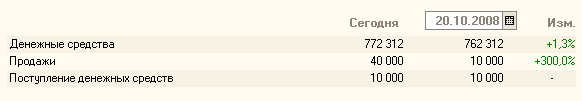
В таблице отражается остаток денежных средств на текущую дату, а также продажи и поступление денежных средств за день. Эти данные приведены в сравнении со вчерашним днем. При необходимости руководитель может поменять дату, с которой производится сравнение.
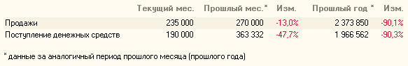
В таблице отражаются продажи и поступление денежных средств за текущий месяц. Эти данные приведены в сравнении с аналогичным периодом прошлого месяца и прошлого года. Например, если сегодня 10 ноября, то данные за текущий месяц будут рассчитаны с 01 по 10 ноября, данные за прошлый месяц – с 1 по 10 октября, данные за прошлый год – с 1 по 10 ноября прошлого года. В некоторых снижение продаж относительно прошлого месяца не является критичным, снижение обусловлено сезонным спадом. Выявить такие ситуации поможет сравнение с аналогичным периодом прошлого года.
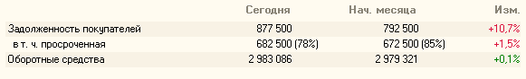
В таблице отражается задолженность покупателей и оборотные средства. Эти данные приведены в сравнении с данными на начало месяца. Дополнительно выделена просроченная задолженность покупателей и показан удельный вес в общей сумме задолженности покупателей.
В разделе Оперативные данные собраны наиболее критичные сводные данные о работе организации. Для получения детальной информации предназначен раздел Отчеты для руководителя.
В условиях экономического кризиса, руководителя организации в первую очередь волнует недостаток денежных средств, необходимых для плановых расчетов с бюджетом, кредитными учреждениями и контрагентами.
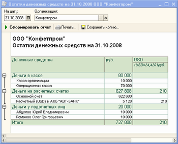
В отчете Остатки денежных средств показаны остатки денежных средств на расчетных счетах и в кассе на определенную дату, а также отражены суммы денежных средств, выданных подотчетным лицам. Недостаток денежных средств на счетах на момент осуществления плановых платежей может быть обусловлен рядом причин: снижение продаж по организации по номенклатурным группам, нарушение графика погашения задолженности покупателями и т.д.
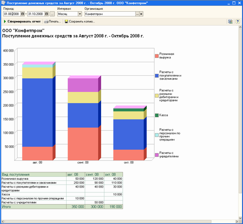
Для анализа динамики поступления денежных средств по статьям воспользуемся отчетом Поступление денежных средств. Поступление показывается в разрезе статей.
Проверить расход денежных средств за предыдущий период поможет отчет Расход денежных средств.
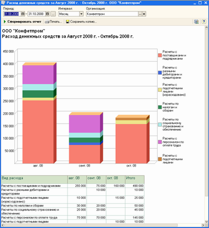
В отчете отражается расход денежных средств из кассы и с расчетных счетов. Расход показывается в разрезе статей.
По статье Расходы с подотчетными лицами (израсходовано) отражается сумма денежных средств, по которой отчитались подотчетные лица за период. Контролировать сумму задолженности подотчетных лиц перед организацией можно с помощью отчета Остатки денежных средств.
Анализ изменения расхода денежных средств по статьям по сравнению с прошлыми периодами позволит выявить резкие колебания и предотвратить их в будущем.
Отчеты блока Расчеты с покупателями помогут проанализировать изменение задолженности покупателей.
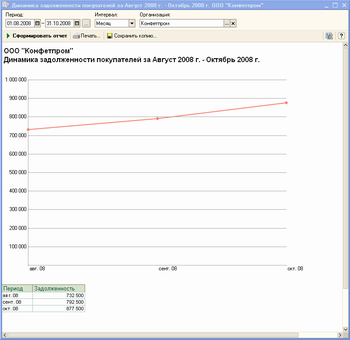
Отчет Динамика задолженности покупателей показывает изменение задолженности покупателей по организации за период. Данные приводятся без детализации по контрагентам.
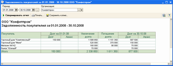
В отчете Задолженность покупателей отражается задолженность и сумма аванса детально по покупателям на начало и конец выбранного периода, а также движение за период – увеличение и погашение долга. Покупатели в отчете отсортированы по убыванию величины долга на конец периода.
Отчет Задолженность покупателей дает представление об общей сумме задолженности по покупателям и не показывает потенциальные риски во взаимоотношениях с каждым отдельным контрагентом. О неблагонадежности должника свидетельствует не только и не столько сумма задолженности, сколько промежутки между датами ее возникновения и погашения, а также выполнение условий договора по срокам оплаты. Поэтому не стоит пренебрегать информацией, содержащейся в отчетах Задолженность покупателей по срокам долга и Просроченная задолженность покупателей.
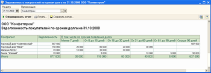
Отчет Задолженность покупателей по срокам долга предназначен для анализа информации по периодам (интервалам) возникновения долга покупателей.
Покупатели в отчете отсортированы по убыванию величины долга на дату отчета.
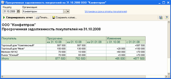
В отчете Просроченная задолженность покупателей отражается сумма просроченной задолженности по покупателям. В отчете приводится сравнение величины просроченной задолженности на текущую дату с величиной на начало месяца и на начало года.
В программе можно установить единый срок оплаты (отсрочки) по всем договорам с покупателями. Наряду с этим по отдельным договорам можно установить срок оплаты, отличающийся от общеустановленного.
Задержка оплаты покупателями может привести к несвоевременному погашению нашей организацией задолженности перед поставщиками. Для планирования оплат поставщикам, зависимости от имеющихся у предприятия средств, предназначены отчеты группы Расчеты с поставщиками.
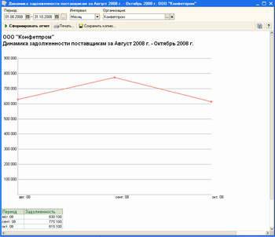
Отчет Динамика задолженности поставщикам показывает изменение задолженности поставщикам по организации за период. Данные приводятся без детализации по контрагентам.
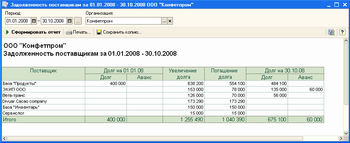
В отчете Задолженность поставщикам отражается задолженность и сумма аванса детально по поставщикам на начало и конец выбранного периода, а также движение за период – увеличение и погашение долга. Поставщики в отчете отсортированы по убыванию величины долга на конец периода.
Кризис неплатежей может быть обусловлен как внешними, не зависящими от предприятия факторами, так и внутренними, к числу которых можно отнести конкурентоспособность выпускаемой продукции (оказываемых услуг, проданного товара). Повышения качества и снижение цены, способные повысить конкурентные преимущества предприятия, ограничиваются такими факторами, как себестоимость и доходность каждого вида деятельности и предприятия в целом. Таким образом, недостаток денежных средств может быть также вызван:
• Неоптимальной ценой товара (продукции, работ, услуг);
• Высокой себестоимостью вида деятельности;
• Неэффективным использованием оборотных активов предприятия.
В любом случае, даже если анализ движения денежных средств и задолженности показал, что состояние предприятия еще не столь плачевно, как могло показаться на первый взгляд, тем не менее, определенная оптимизация деятельности не будет помехой. Чтобы выбрать пути оптимизации, необходимо обратиться к данным отчетов раздела Общие показатели.
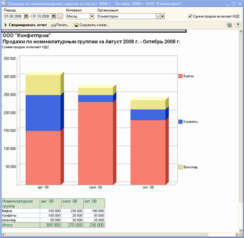
В отчете Продажи отражается сумма продаж по основным видам деятельности организации в разрезе номенклатурных групп. На основании данных программы можно проанализировать изменение продаж за период.
В сумму продаж включается выручка по отгруженным товарам или предоставленным услугам, независимо от того, поступила оплата от покупателей или нет.
Даже достаточно высокие показатели продаж еще не свидетельствуют о финансовой устойчивости предприятия, высокой доходности деятельности. Эту информацию руководитель может получить, анализируя данные отчета Доходы и расходы (прибыль/убыток).
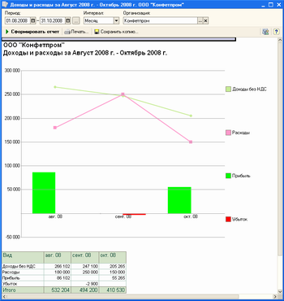
Отчет Доходы и расходы (прибыль/убыток) содержит информацию о прибылях (убытках) по основным видам деятельности. На основании данных программы можно проанализировать динамику доходов, расходов, а также прибыли или убытка за период.
При формировании отчета за месяц, который еще не закрыт, прибыль (убыток) рассчитывается без учета затрат, которые отражаются в программе в конце месяца. Например, затраты на оплату труда. Окончательная величина прибыли (убытка) будет определена после учета всех затрат текущего месяца.
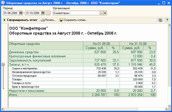
В отчете Оборотные средства показана структура оборотных средств организации. С помощью отчета можно проанализировать удельный вес каждой статьи в общей величине оборотных средств на начало и конец периода.
Существенная доля дебиторской задолженности в составе оборотных средств может свидетельствовать о высокой степени зависимости финансового состояния от платежеспособности покупателей. Существенный удельный вес статей Товары, Сырье и материалы как на начало, так и на конец периода, в совокупности с низкими показателями изменения отдельных номенклатурных позиций сигнализирует о слабой взаимосвязи служб снабжения и сбыта.
Для повышения эффективности анализа деятельности организации рекомендуем ознакомится со статьями раздела Антикризисный анализ на интернет-ресурсе БУХ.1С. Раздел Антикризисный анализ периодически пополняется новыми актуальными статьями.